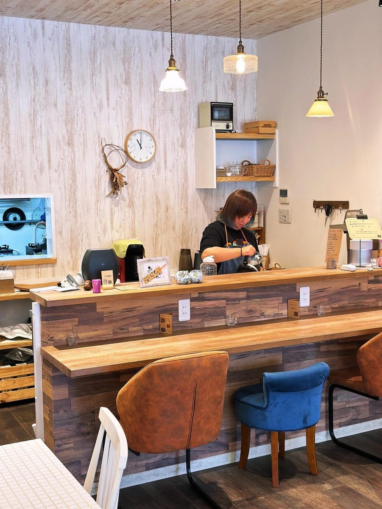

work ／ 就労継続支援B型
ご利用のご案内就労継続支援B型
pu-a-pu では、実際に調理を担当したり、ホールスタッフとして働くことができます。仕事内容は、あなたのペースで。


work
働くよろこびを、いっしょに
働くことによって得られるもの。それは、社会とのつながりと、可能性です。可能性がひろがれば、選ぶことができる。それぞれに合わせての仕事を考え、提案しています。
調理
ランチやお弁当づくり。下ごしらえなど、できることから少しずつ。

ホール
お店の顔として、お客様と接するお仕事です。
support
不安を、いっしょに考えます
- 01
有資格者がヒアリング
「はたらきたいけど、自分になにができるんだろう？」「迷惑をかけてしまわないだろうか？」そんな不安を、一緒にヒアリングしながら考えて解決します。
- 02
グループホームも運営しているから
グループホームと就労支援施設を運営しているからこそ、分かることがたくさんあります。
- 03
やりたい気持ちを大切に
個々のちいさなチャレンジを重ねて、できることを増やしていきます。「できる！」をみつけて、一緒にチャレンジしましょう。
- 04
得意なことで、やりがいを
英語が得意な方、パソコンが好きな方、料理が好きな方、料理のお手伝いが好きな方。苦手なことも、少しずつ一緒に行い、可能性をひろげています。
environment
はたらき続けられる環境づくり
- コミュニケーションを大切に、悩んでいることがないか、いつも見守ります。
- 笑顔があふれる環境を大切に、はたらき続ける気持ちになれるような声かけをします。
- 自慢できるお店づくりをして、はたらくことに誇りを持てるようにサポートします。
how to
見学・ご利用の流れ
まずは、お気軽にお電話ください。
- 1
お問い合わせ
お電話でご連絡ください。
06-6180-8859 - 2
見学
お店の様子をご覧いただけます。障がい者手帳をお持ちください。
- 3
ご利用のご相談
くわしくは、お電話でご案内します。
- 利用対象・定員
- お問い合わせください
- 工賃
- お問い合わせください
- 活動日・時間
- お問い合わせください
- 所在地
- 大阪市城東区中央1-2-23-113
大阪メトロ「蒲生四丁目駅」1番出口 徒歩6分／大阪環状線「京橋駅」 徒歩11分 - 電話
- 06-6180-8859
受付：平日 9:00〜17:30
faq
よくあるご質問
どんな仕事ができますか？
実際に調理を担当したり、ホールスタッフとして働くことができます。仕事内容は、あなたのペースで一緒に考えます。
自分に何ができるか、不安です。
有資格者が、不安を一緒にヒアリングしながら考えて解決します。お気軽にご相談ください。
苦手なことがあっても大丈夫ですか？
得意なことで、やりがいを持てるようにします。苦手なことも、少しずつ一緒に行い、可能性をひろげています。
見学のとき、持っていくものはありますか？
見学の際には、障がい者手帳をお持ちください。
そのほかのご質問（利用条件・工賃・利用の流れなど）は、お電話でお答えします。